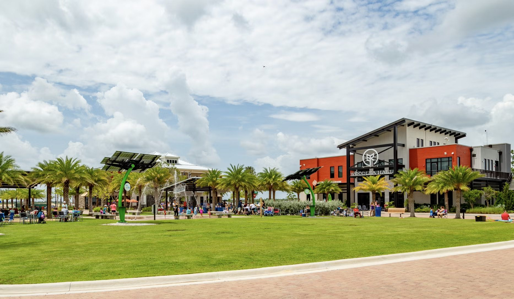

Resilience is how we build
Why the Southwest Florida Resilience Accelerator is anchored here.
Copy below is drafted from the press release and comms toolkit. Both quotes are straight from those sources and awaiting final sign-off. Still open: which Babcock facts and stats to feature, and any imagery preferences for this page.

At Babcock Ranch, resilience is part of how we plan, build, and grow. As America's first solar-powered town and a nationally recognized leader in sustainable, climate-resilient development, Babcock is a living laboratory where innovators pilot, test, and scale real-world solutions.
Why the accelerator lives here

“When we built Babcock Ranch, we set out to prove that resilience, innovation, and long-term community planning could work together. That same idea is at the heart of Ambition Accelerated's Southwest Florida Resilience Accelerator, which we're proud to support at Babcock Ranch. This program will help connect founders building resilience technologies with the partners, mentors, and market opportunities they need to move their solutions forward.”
Syd Kitson, Chairman and CEO, Kitson & Partners
“Anchoring the new Southwest Florida Resilience Accelerator at Babcock Ranch underscores our vision to be the most sustainable, innovative, and resilient town in America. By welcoming pioneers from across the globe into our sandbox to scale concepts in real-time, we are convening the capital, resources, and like-minded people needed to cultivate long-term economic growth in Southwest Florida.”
Lucienne Pears, VP of Economic and Business Development, Kitson & PartnersAbout the community
Babcock Ranch was created by Kitson & Partners on a simple idea: smart growth and sustainability belong together. Half the town's footprint is set aside as greenways, parks, and lakes. It's been a top-5 best-selling master-planned community four years running, and is planned for 20,000 residences and about 6 million square feet of commercial space, all built to Florida Green Building Coalition standards.